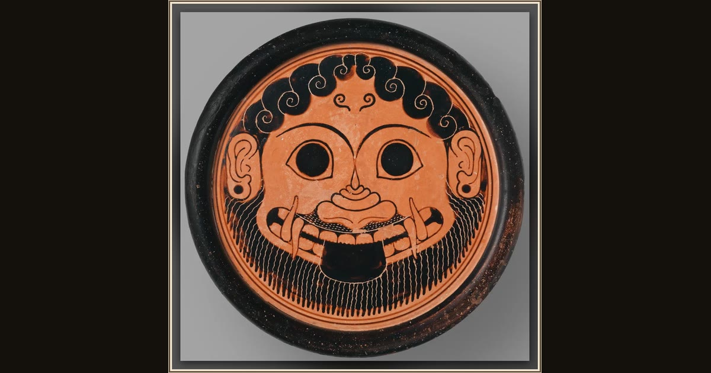

Terracotta stand
Signed by Ergotimos · ca. 570 BCE · met
The terracotta stand bears a wide-eyed Gorgon face with bared teeth and tusks, echoing the glaring eyes and gnashing teeth of the Gorgons on the shield (235–239) Explore its place in Hesiod's Poems, Shield of Heracles, line 236.